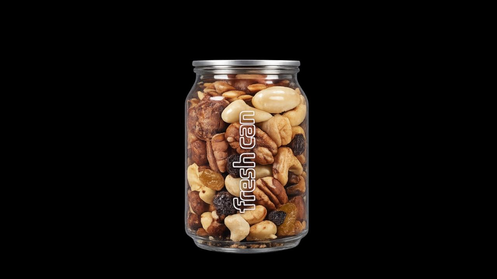
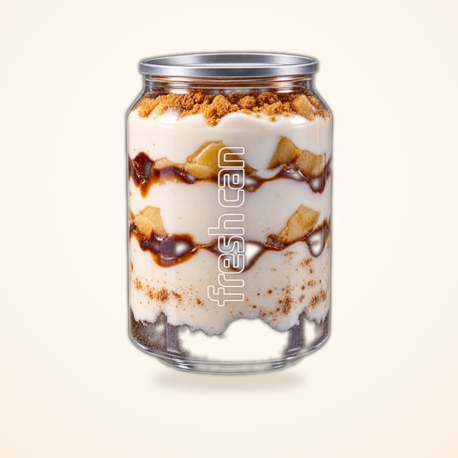

Vitrine FreshCan
Fresco por fora.
Fresco por fora.
Irresistível por dentro.
Da lata transparente ao primeiro gole: conheça, categoria por categoria, cada drink, suco, panqueca e sobremesa que sai da FreshCan, em Porto Belo/SC.
role para baixo